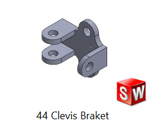
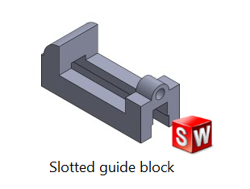
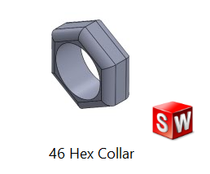
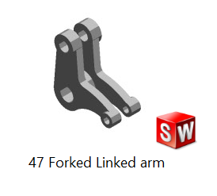
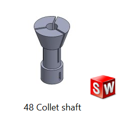
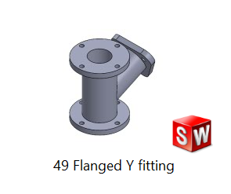
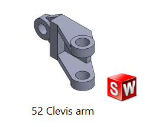

Design → Validation → Manufacturability
Each case study below follows the same real workflow used on every project: requirements, concept design, CAD, structural or manufacturing validation, and a manufacturing-ready output.
Full design-build-test cycle for a gravity-powered lighting system: concept development and gear calculations, CAD modelling, GD&T technical drawings, BOM, physical prototyping, and mechanical validation testing against design and end-user requirements.


- Converted a 12 kg / 1800 mm descending mass at 0.083 RPM into 227 RPM output via a 2734.7:1 gear ratio.
- Validated the module 1.5, 172.5 mm planetary ring gear using Lewis bending equations — peak stress of 14.47 MPa, well within the 40–60 MPa tensile strength of the 3D-printed PLA components.
- Built and tested a working prototype achieving 1200 RPM / 2 V output from the drive motor.
- Diagnosed the transmission-efficiency gap versus the 20-minute illumination target and defined a clear optimization path — pulley resizing, ratio reduction, belt/chain transmission — through experimental root-cause analysis.
Structural validation of a compact single-column screw press base frame, with focus on casting feasibility, machining features, load transfer, and non-linear FEA under full rated load.


- Performed non-linear FEA of the 20 kN-rated base frame (Cast Iron Grade 40, ~31 kg), validating a safety factor of 1.5.
- Maximum Von Mises stress kept below 200 MPa, with peak displacement of ~1 mm under full load.
- Identified stress concentrations at frame corners via FEA and resolved them through fillet redesign — confirming structural integrity without added mass.
- Designed casting-ready geometry with appropriate fillets, draft, and wall thickness for foundry manufacture.
Redesigned a bell crank component from a fixed 77.1 × 112.3 × 15 mm design space under a 20 kN load, through mesh generation, iterative topology optimization, and DfAM-compliant CAD reconstruction.


- Removed non-critical material while preserving functional load-bearing interfaces.
- Rebuilt the optimized mesh output as smooth, DfAM-compliant parametric CAD in LUVOCOM® 3F PET CF 9780 BK.
- Validated via non-linear structural and buckling FEA in Nastran: 0.374 mm maximum displacement, 74.7 MPa Von Mises stress, and a 5.4× buckling safety margin against the applied load.
Reconstructed a connecting rod cap from 3D scan data acquisition through point-cloud processing to a fully parametric CAD model and dimensioned manufacturing drawing.


- Converted raw scan data into fully parametric CAD geometry.
- Reconstructed bolt interfaces and bearing seating surfaces to functional tolerance.
- Produced a complete manufacturing drawing with full GD&T dimensioning.
Standard machine elements rebuilt from engineering drawing references to build SolidWorks modelling speed, feature-tree discipline, and GD&T fluency — the fundamentals underneath every case study above.











Industrial & process engineering background
- Led business process reengineering and benchmarking engagements for manufacturing clients, developing strategic road maps with senior consultants.
- Designed a Factory Assessment Tool aligned to ISO 9001:2015, ISO 14001:2015, and ISO 45001:2018.
- Implemented a visual management system that improved operational efficiency by 30% and enabled real-time WIP control.
- Improved plant efficiency from 45% to 75% for ADIDAS operations through lean tools and line-balancing.
- Built a workforce skill matrix enabling 80+ workers to perform multi-role tasks.
- Deployed an inspection framework with the quality team that reduced defect rates and improved MTTR.
- Analyzed the effect of lubrication types on equipment reliability and produced a technical findings report.
Industrial Robotics & Automation — 88 hrs.
Digital Learning Hub Luxembourg · Nov–Dec 2025
From Code to Motion
- Python for robotics
- Motion control
- IIoT integration
Vision Systems for Industrial Robots
- Object recognition
- Vision-based quality inspection
- Sensor integration
Advanced Industrial Robotics
- Advanced control algorithms
- Actuator systems
- Manufacturing applications
- Thesis: Synthesis and characterization of micro/nano aluminum particles through electric discharge machining.